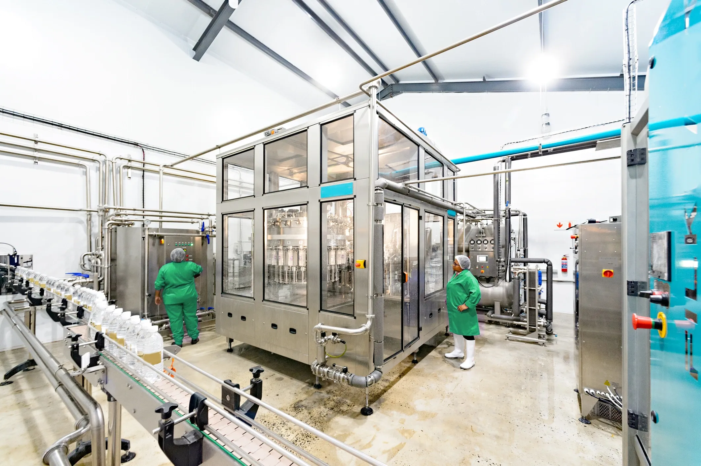
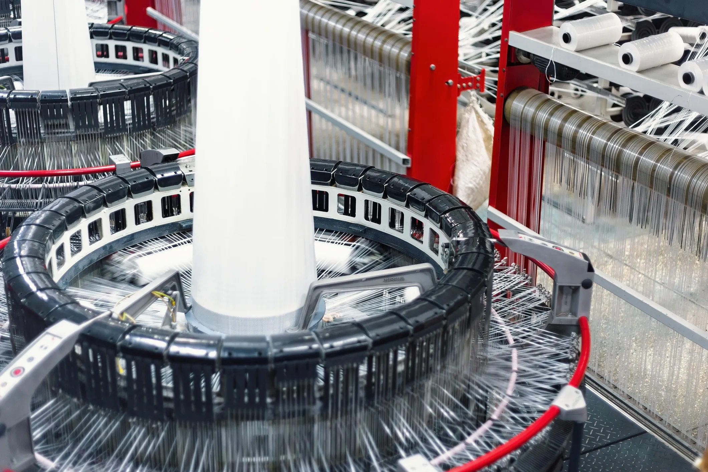
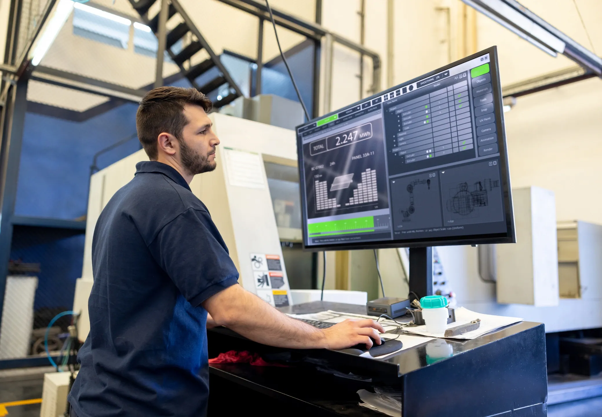

PrimeSlit Command Layer
Supervisory logic and line-state orchestration for duplex, turret, and center-wind slitter workflows.
Converting Industry Systems
Control Standards specializes in digital operations for slitting and rewinding environments. We connect line monitoring, machine health, maintenance planning, procurement flow, and analytics into one production-ready control layer.
Type Of Service
Supervisory logic and line-state orchestration for duplex, turret, and center-wind slitter workflows.

End-to-end data backbone across slitting, rewinding, QA checkpoints, and dispatch readiness.
Service Stack
Production Line Monitoring
Machine Health Monitoring
Preventive Maintenance Scheduler
Procurement & Order Placement
Analytics & Recommendation
Cost Saving Projection
Intelligence View
Current speed, reel state, slit deviation, and stop reason stack in one board.
Predictive alerts with lead-time windows for planned intervention.
Contextual operating suggestions by product family and machine mode.
Daily and monthly savings projection against baseline operating profile.
Factory Detail

Operator Console Guidance
Quality Gate Intelligence

Continuous Web Throughput Control

Fast Setup And Recipe Changeovers

Supervisory Performance Visibility
Lifecycle Outcome
Inspired by proven converting-industry operating models, we align production intelligence with lifecycle execution: diagnostics, support, upgrades, and practical optimization loops that sustain performance over time.
Start Your Program
Share your current line architecture, key losses, and growth targets. We will define a phased intelligence rollout with clear technical scope and measurable business value.